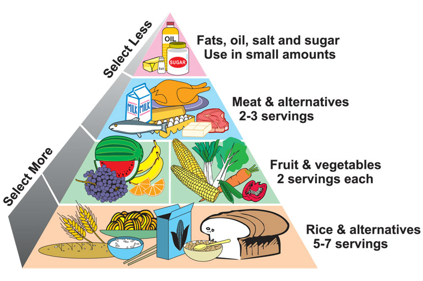

Healthy eating in College
There are endless reasons and benefits for eating healthy. While eating healthy can be a difficult life adjustment to make, college is the perfect place to make a change, and it can be easy too. Like any other habit, eating healthy takes practice. The more you practice it, the more enjoyable it will become, and as you start to notice a change in your body and your mind, you will really acquire a taste for healthy food.
Balancing a diet
Eating healthy requires more than just eating the right foods, its also knowing which ones to eat and when to eat them. This is known as balancing a diet. A balanced diet consists of the following food groups from bottom to top: grains, fruits/vegetables, meats/protein, fats/oils. In order to correctly balance a diet, it's important to know the healthy choices within each food group. Your dining halls most likely offer these healthy choices, and the best part is that they are already cooked/ready to eat!
Healthy Substitutes
Here are some healthy substitutes for the foods you may be used to eating. While it may be difficult at first to consistently make the better choice, it will make a huge difference in your physical health over time!
| Food | Calories | Sat. Fat | Carbs | Protein |
|---|---|---|---|---|
| Fried Chicken 3 oz. | 226.2 Cal | 3.4g | 2.6g | 24g |
| Grilled Chicken 3 oz. | 126 Cal | 0.9g | 0g | 25g |
| White Rice 1 cup | 205 Cal | 0.1g | 45g | 4.3g |
| Cooked Quinoa 1 cup | 222 Cal | 0g | 29g | 8g |
| Butter 1 tbsp | 102 Cal | 7g | 0g | 0g |
| Olive Oil | 120 Cal | 1.9g | 0g | 0g |
Mindful Eating
Another big factor when it comes to eating healthy is when and how much to eat. One great method of eating that tends to this issue is called mindful eating. Mindful eating is paying attention to your body before during and after eating. It means eating when you feel like your body needs food (i.e. stomach growling, low energy). It also means knowing when to stop eating, by being mindful of how full you are, and not just how much is left on your plate. In order to eat mindfully, you should not do anything else while eating, so you can pay attention to your body's signals.